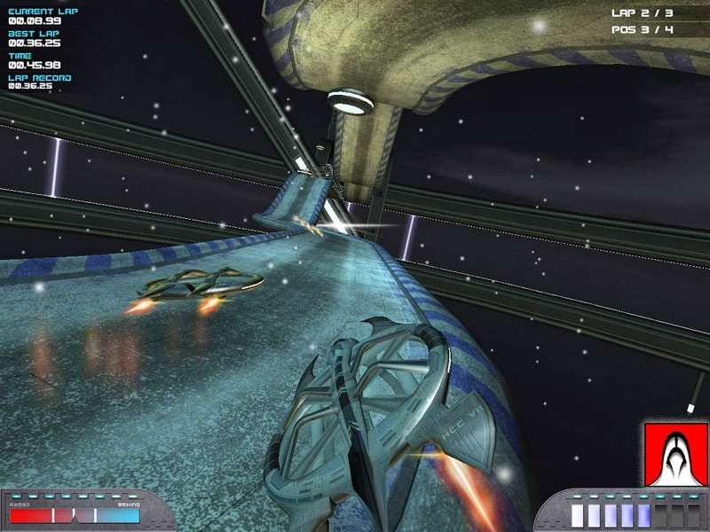

H-Craft es un juego de “carreras” con Hovercrafts (aerodeslizadores) estupendo disponible libremente para GNU/linux (tambien hay vercion para android y windows)
hardware
- 1 Ghz Processor
- 512 MB Memory
- A 3D-Card with the power of a Geforce3 or Radeon 7500 (or better)
- OpenGL 1.3
- GNU/linux (32 Bit / 64 Bit) or winbug$ 98, mp, xp, 2000, vista
- 150 MB free space on hard-disk
build (debian)
Este es el proceso que segui para compilarlo en debian 7. No me gustan los IDEs y como en este caso se utiliza CodeBlocks, mejor invocarlo desde la terminal
Por cierto, actualice al codigo para compilarlo desde freidora 25… la compilacion no se logro…
su
aptitude install bash gcc cmake codeblocks mercurial
exit
mkdir ~/h-craft
cd ~/h-craft
hg clone https://bitbucket.org/mzeilfelder/trunk_hc1
hg clone https://bitbucket.org/mzeilfelder/media_hc1
cd trunk_hc1/build
# necesario ejecutarlo con bash o colocar #! /bin/bash
# a estos scripts
./copy-media-linux.sh
./make-libs-linux.sh
cd ..
codeblocks --build --target="Linux - Release - accurate math - static" \
--no-batch-window-close libs/irrlicht/source/Irrlicht/Irrlicht-gcc.cbp
codeblocks --build --target="linux64 release" --no-batch-window-close src/hover.cbp
tuning
existe una traduccion del los menus realizada por Caleb, puedes encontrarla en http://cadetesdelespacio.es/node/1362.